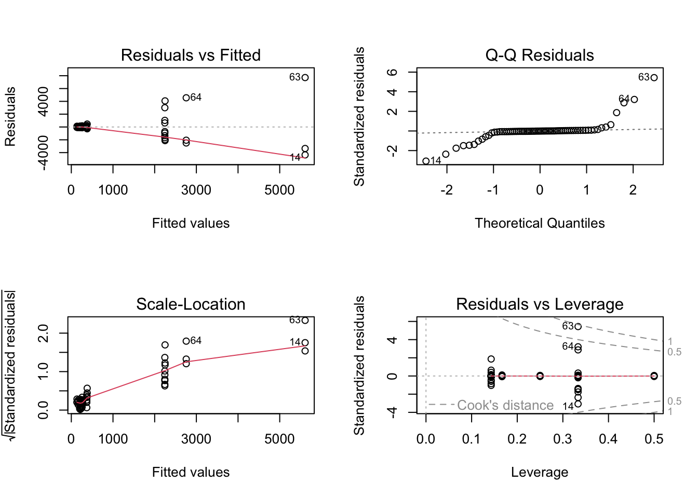
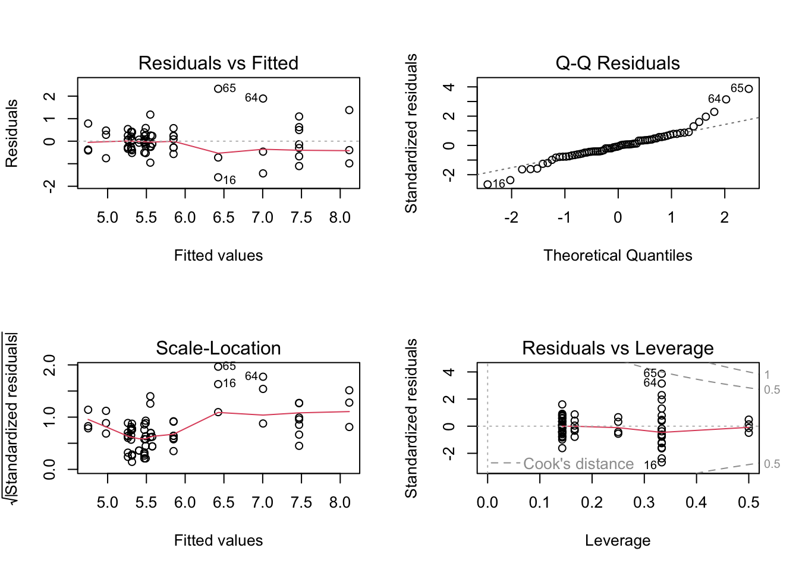
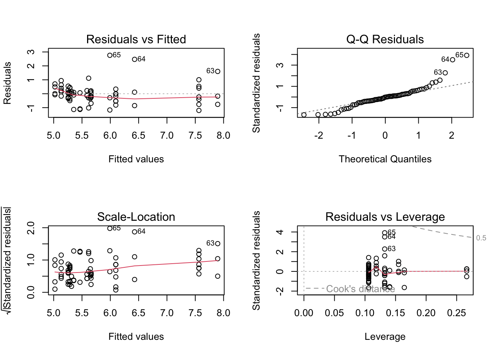
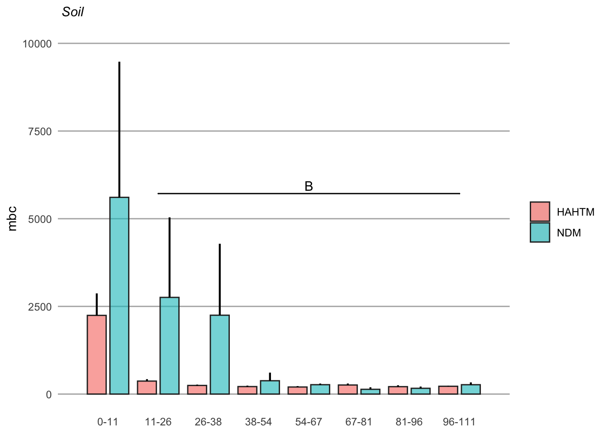
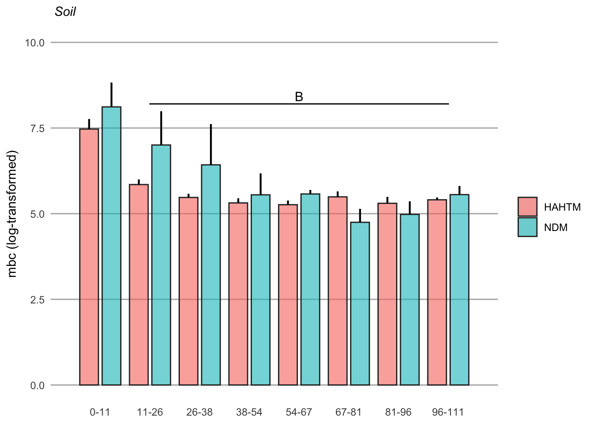

soil <- read.csv('soil_main.csv') %>%
as_tibble() %>%
mutate_at(vars(material, depth_mean, depth_cat), factor)Soil
April 4, 2023
soil# A tibble: 70 × 4
material depth_cat depth_mean mbc
<fct> <fct> <fct> <dbl>
1 HAHTM 1 6.5 896.
2 HAHTM 2 20.5 262.
3 HAHTM 3 35.5 231.
4 HAHTM 4 53 121.
5 HAHTM 5 70 146.
6 HAHTM 6 80.5 212.
7 HAHTM 7 94 153.
8 HAHTM 1 3 3274.
9 HAHTM 2 11 197.
10 HAHTM 3 22 144.
# ℹ 60 more rowsLinear regression - no transformation
soil.lm <- lm(mbc ~ depth_cat * material, data = soil)Model assumption
Asumptions are not valid for simple linear regression
Residuals are not equally or independently distributed
par(mfrow = c(2, 2))
plot(soil.lm)
Log-transformation
Although outliers are present, log-transform of the response variable, mbc, appear to meet the #assumptions of simplae linear regression
soil_log.lm <- lm(log(mbc) ~ depth_cat * material, data = soil)par(mfrow = c(2, 2))
plot(soil_log.lm)
summary(soil_log.lm)
Call:
lm(formula = log(mbc) ~ depth_cat * material, data = soil)
Residuals:
Min 1Q Median 3Q Max
-1.60270 -0.35072 -0.04529 0.26735 2.32616
Coefficients:
Estimate Std. Error t value Pr(>|t|)
(Intercept) 7.4695 0.2787 26.801 < 2e-16 ***
depth_cat2 -1.6196 0.3941 -4.109 0.000136 ***
depth_cat3 -1.9960 0.3941 -5.064 5.10e-06 ***
depth_cat4 -2.1555 0.3941 -5.469 1.19e-06 ***
depth_cat5 -2.2082 0.3941 -5.603 7.33e-07 ***
depth_cat6 -1.9788 0.4102 -4.823 1.19e-05 ***
depth_cat7 -2.1664 0.4622 -4.687 1.92e-05 ***
depth_cat8 -2.0644 0.5912 -3.492 0.000965 ***
materialNDM 0.6470 0.5088 1.272 0.208981
depth_cat2:materialNDM 0.5075 0.7196 0.705 0.483723
depth_cat3:materialNDM 0.3052 0.7196 0.424 0.673149
depth_cat4:materialNDM -0.4108 0.7196 -0.571 0.570472
depth_cat5:materialNDM -0.3327 0.7196 -0.462 0.645712
depth_cat6:materialNDM -1.3894 0.7285 -1.907 0.061842 .
depth_cat7:materialNDM -0.9710 0.7590 -1.279 0.206255
depth_cat8:materialNDM -0.4959 0.8959 -0.554 0.582182
---
Signif. codes: 0 '***' 0.001 '**' 0.01 '*' 0.05 '.' 0.1 ' ' 1
Residual standard error: 0.7374 on 54 degrees of freedom
Multiple R-squared: 0.6441, Adjusted R-squared: 0.5452
F-statistic: 6.515 on 15 and 54 DF, p-value: 1.247e-07car package
Anova(soil_log.lm)Anova Table (Type II tests)
Response: log(mbc)
Sum Sq Df F value Pr(>F)
depth_cat 46.579 7 12.2381 2.99e-09 ***
material 1.676 1 3.0828 0.08479 .
depth_cat:material 5.536 7 1.4544 0.20338
Residuals 29.361 54
---
Signif. codes: 0 '***' 0.001 '**' 0.01 '*' 0.05 '.' 0.1 ' ' 1Just depth as a predictor variable
soil_log2.lm <- lm(log(mbc) ~ material + depth_cat, data = soil)par(mfrow = c(2, 2))
plot(soil_log2.lm)
summary(soil_log2.lm)
Call:
lm(formula = log(mbc) ~ material + depth_cat, data = soil)
Residuals:
Min 1Q Median 3Q Max
-1.19906 -0.32395 -0.01198 0.22237 2.76037
Coefficients:
Estimate Std. Error t value Pr(>|t|)
(Intercept) 7.5641 0.2462 30.729 < 2e-16 ***
materialNDM 0.3319 0.1939 1.712 0.092 .
depth_cat2 -1.4674 0.3383 -4.338 5.49e-05 ***
depth_cat3 -1.9045 0.3383 -5.630 4.84e-07 ***
depth_cat4 -2.2787 0.3383 -6.737 6.55e-09 ***
depth_cat5 -2.3080 0.3383 -6.823 4.66e-09 ***
depth_cat6 -2.4314 0.3476 -6.995 2.36e-09 ***
depth_cat7 -2.5421 0.3736 -6.805 5.01e-09 ***
depth_cat8 -2.2493 0.4491 -5.008 4.99e-06 ***
---
Signif. codes: 0 '***' 0.001 '**' 0.01 '*' 0.05 '.' 0.1 ' ' 1
Residual standard error: 0.7564 on 61 degrees of freedom
Multiple R-squared: 0.577, Adjusted R-squared: 0.5215
F-statistic: 10.4 on 8 and 61 DF, p-value: 4.727e-09Anova(soil_log2.lm)Anova Table (Type II tests)
Response: log(mbc)
Sum Sq Df F value Pr(>F)
material 1.676 1 2.930 0.09203 .
depth_cat 46.579 7 11.632 2.735e-09 ***
Residuals 34.897 61
---
Signif. codes: 0 '***' 0.001 '**' 0.01 '*' 0.05 '.' 0.1 ' ' 1ANOVA model with “aov”
soil_log2.aov <- aov(log(mbc) ~ material + depth_cat, data = soil)summary(soil_log2.aov) Df Sum Sq Mean Sq F value Pr(>F)
material 1 1.02 1.022 1.787 0.186
depth_cat 7 46.58 6.654 11.632 2.73e-09 ***
Residuals 61 34.90 0.572
---
Signif. codes: 0 '***' 0.001 '**' 0.01 '*' 0.05 '.' 0.1 ' ' 1Tukey HSD test
tukey <- TukeyHSD(soil_log2.aov)tukey Tukey multiple comparisons of means
95% family-wise confidence level
Fit: aov(formula = log(mbc) ~ material + depth_cat, data = soil)
$material
diff lwr upr p adj
NDM-HAHTM 0.2573159 -0.1275509 0.6421827 0.1862144
$depth_cat
diff lwr upr p adj
2-1 -1.46740010 -2.529003 -0.4057974 0.0013471
3-1 -1.90446394 -2.966067 -0.8428612 0.0000129
4-1 -2.27871293 -3.340316 -1.2171102 0.0000002
5-1 -2.30801737 -3.369620 -1.2464146 0.0000001
6-1 -2.42888709 -3.519580 -1.3381940 0.0000001
7-1 -2.53247315 -3.702302 -1.3626439 0.0000001
8-1 -2.23438532 -3.638754 -0.8300169 0.0001366
3-2 -0.43706384 -1.498667 0.6245389 0.8983200
4-2 -0.81131283 -1.872916 0.2502899 0.2606909
5-2 -0.84061727 -1.902220 0.2209855 0.2214228
6-2 -0.96148699 -2.052180 0.1292061 0.1229177
7-2 -1.06507305 -2.234902 0.1047562 0.0998910
8-2 -0.76698522 -2.171354 0.6373832 0.6782474
4-3 -0.37424899 -1.435852 0.6873537 0.9529965
5-3 -0.40355343 -1.465156 0.6580493 0.9308957
6-3 -0.52442315 -1.615116 0.5662700 0.7996502
7-3 -0.62800921 -1.797838 0.5418200 0.6967219
8-3 -0.32992138 -1.734290 1.0744470 0.9954441
5-4 -0.02930445 -1.090907 1.0322983 1.0000000
6-4 -0.15017416 -1.240867 0.9405190 0.9998568
7-4 -0.25376022 -1.423589 0.9160690 0.9972261
8-4 0.04432761 -1.360041 1.4486960 1.0000000
6-5 -0.12086972 -1.211563 0.9698234 0.9999670
7-5 -0.22445578 -1.394285 0.9453735 0.9987287
8-5 0.07363205 -1.330736 1.4780005 0.9999998
7-6 -0.10358606 -1.299877 1.0927047 0.9999939
8-6 0.19450177 -1.231984 1.6209876 0.9998659
8-7 0.29808783 -1.189780 1.7859557 0.9983231cld
cld <- multcompLetters4(soil_log2.aov, tukey) cld$material
$material$Letters
NDM HAHTM
"a" "a"
$material$LetterMatrix
a
NDM TRUE
HAHTM TRUE
$depth_cat
1 2 3 8 4 5 6 7
"a" "b" "b" "b" "b" "b" "b" "b" cld$depth_cat 1 2 3 8 4 5 6 7
"a" "b" "b" "b" "b" "b" "b" "b" soil_main <- read.csv('soil_main.csv') %>%
as_tibble() %>%
mutate_at(vars(material, depth_cat), factor) %>%
group_by(material, depth_cat) %>%
dplyr::summarize(mean = mean(mbc),
sd = sd(mbc),
n = n(),
se = sd/sqrt(n)
) %>%
mutate(se = sd / sqrt(n),
lower.ci = mean - qt(1 - (0.05 / 2), n - 1) * se,
upper.ci = mean + qt(1 - (0.05 / 2), n - 1) * se)`summarise()` has grouped output by 'material'. You can override using the
`.groups` argument.soil_main# A tibble: 16 × 8
# Groups: material [2]
material depth_cat mean sd n se lower.ci upper.ci
<fct> <fct> <dbl> <dbl> <int> <dbl> <dbl> <dbl>
1 HAHTM 1 2244. 1659. 7 627. 710. 3778.
2 HAHTM 2 371. 144. 7 54.6 237. 504.
3 HAHTM 3 246. 65.7 7 24.8 185. 307.
4 HAHTM 4 214. 72.3 7 27.3 147. 281.
5 HAHTM 5 202. 69.5 7 26.3 138. 266.
6 HAHTM 6 259. 105. 6 42.7 149. 368.
7 HAHTM 7 212. 79.1 4 39.5 86.0 338.
8 HAHTM 8 223. 21.4 2 15.1 31.0 415.
9 NDM 1 5609. 6699. 3 3868. -11032. 22250.
10 NDM 2 2757. 3953. 3 2282. -7062. 12576.
11 NDM 3 2249. 3529. 3 2038. -6518. 11015.
12 NDM 4 381. 400. 3 231. -612. 1374.
13 NDM 5 268. 57.0 3 32.9 126. 409.
14 NDM 6 136. 101. 3 58.3 -114. 387.
15 NDM 7 165. 86.0 3 49.7 -48.9 378.
16 NDM 8 267. 93.7 2 66.3 -575. 1109.x_labels = c("1", "2", "3", "4", "5", "6", "7", "8")x_labels2 = c("0-11", "11-26", "26-38", "38-54", "54-67", "67-81", "81-96", "96-111")soil_main.barplot <- ggplot(soil_main, aes(x = depth_cat, y = mean, fill = material)) +
geom_bar(stat = "identity", position = position_dodge(width = 0.9), width = 0.75, color = "#2b2b2b", linewidth = 0.50, alpha = 0.6) +
geom_linerange(aes(ymin = mean, ymax = mean + se), position = position_dodge(width = 0.9), linewidth = 0.75) +
#geom_signif(comparisons = list(c("1", "1")), y_position = 9950,
# tip_length = 0, vjust = 0.1) +
geom_signif(comparisons = list(c("2", "8")), y_position = 5250,
annotation = c("B"),
tip_length = 0, vjust = 0.1) +
#scale_y_discrete(expand = c(0, 8000), expression(paste("mbc"))) +
scale_x_discrete(expand = c(0, 1), labels = x_labels2) +
ggtitle(expression(paste(italic(" Soil")))) +
ylab(expression(paste("mbc"))) +
ylim(0, 10000) +
labs(x = NULL) +
theme(strip.text = element_text(size = 10, color = "black", hjust = 0.50),
strip.background = element_rect(fill = "#FFFFFF", color = NA),
panel.background = element_rect(fill = "#FFFFFF", color = NA),
panel.grid.major.x = element_blank(),
panel.grid.minor.x = element_blank(),
panel.grid.minor.y = element_blank(),
panel.grid.major.y = element_line(color = "#b2b2b2"),
panel.spacing.x = unit(1, "cm"),
panel.spacing.y = unit(0.5, "cm"),
panel.spacing = unit(1, "lines"),
axis.ticks = element_blank(),
legend.position = "right",
plot.title = element_text(size = 11),
axis.title.y = element_text(size = 11),
legend.title = element_blank())soil_main.barplot
Log-transformed summary
soil_log_main <- read.csv('soil_main.csv') %>%
as_tibble() %>%
mutate_at(vars(material, depth_cat), factor) %>%
group_by(material, depth_cat) %>%
dplyr::summarize(mean = mean(log(mbc)),
sd = sd(log(mbc)),
n = n(),
se = sd/sqrt(n)
) %>%
mutate(se = sd / sqrt(n),
lower.ci = mean - qt(1 - (0.05 / 2), n - 1) * se,
upper.ci = mean + qt(1 - (0.05 / 2), n - 1) * se)`summarise()` has grouped output by 'material'. You can override using the
`.groups` argument.soil_log_main# A tibble: 16 × 8
# Groups: material [2]
material depth_cat mean sd n se lower.ci upper.ci
<fct> <fct> <dbl> <dbl> <int> <dbl> <dbl> <dbl>
1 HAHTM 1 7.47 0.777 7 0.294 6.75 8.19
2 HAHTM 2 5.85 0.395 7 0.149 5.48 6.21
3 HAHTM 3 5.47 0.280 7 0.106 5.21 5.73
4 HAHTM 4 5.31 0.358 7 0.135 4.98 5.65
5 HAHTM 5 5.26 0.323 7 0.122 4.96 5.56
6 HAHTM 6 5.49 0.391 6 0.160 5.08 5.90
7 HAHTM 7 5.30 0.375 4 0.188 4.71 5.90
8 HAHTM 8 5.41 0.0960 2 0.0679 4.54 6.27
9 NDM 1 8.12 1.23 3 0.711 5.06 11.2
10 NDM 2 7.00 1.71 3 0.987 2.76 11.2
11 NDM 3 6.43 2.06 3 1.19 1.30 11.5
12 NDM 4 5.55 1.09 3 0.627 2.85 8.25
13 NDM 5 5.58 0.203 3 0.117 5.07 6.08
14 NDM 6 4.75 0.679 3 0.392 3.06 6.44
15 NDM 7 4.98 0.662 3 0.382 3.34 6.62
16 NDM 8 5.56 0.358 2 0.253 2.34 8.77Add Letters for significance
soil_log_main.barplot <- ggplot(soil_log_main, aes(x = depth_cat, y = mean, fill = material)) +
geom_bar(stat = "identity", position = position_dodge(width = 0.9), width = 0.75, color = "#2b2b2b", linewidth = 0.50, alpha = 0.6) +
geom_linerange(aes(ymin = mean, ymax = mean + se), position = position_dodge(width = 0.9), linewidth = 0.75) +
#geom_signif(comparisons = list(c("1", "1")), y_position = 9950,
# tip_length = 0, vjust = 0.1) +
geom_signif(comparisons = list(c("2", "8")), y_position = 8.0,
annotation = c("B"),
tip_length = 0, vjust = 0.1) +
scale_x_discrete(expand = c(0, 1), labels = x_labels2) +
ggtitle(expression(paste(italic(" Soil")))) +
ylab(expression(paste("mbc (log-transformed)"))) +
ylim(0, 10) +
labs(x = NULL) +
theme(strip.text = element_text(size = 10, color = "black", hjust = 0.50),
strip.background = element_rect(fill = "#FFFFFF", color = NA),
panel.background = element_rect(fill = "#FFFFFF", color = NA),
panel.grid.major.x = element_blank(),
panel.grid.minor.x = element_blank(),
panel.grid.minor.y = element_blank(),
panel.grid.major.y = element_line(color = "#b2b2b2"),
panel.spacing.x = unit(1, "cm"),
panel.spacing.y = unit(0.5, "cm"),
panel.spacing = unit(1, "lines"),
axis.ticks = element_blank(),
legend.position = "right",
plot.title = element_text(size = 11),
axis.title.y = element_text(size = 11),
legend.title = element_blank())soil_log_main.barplot